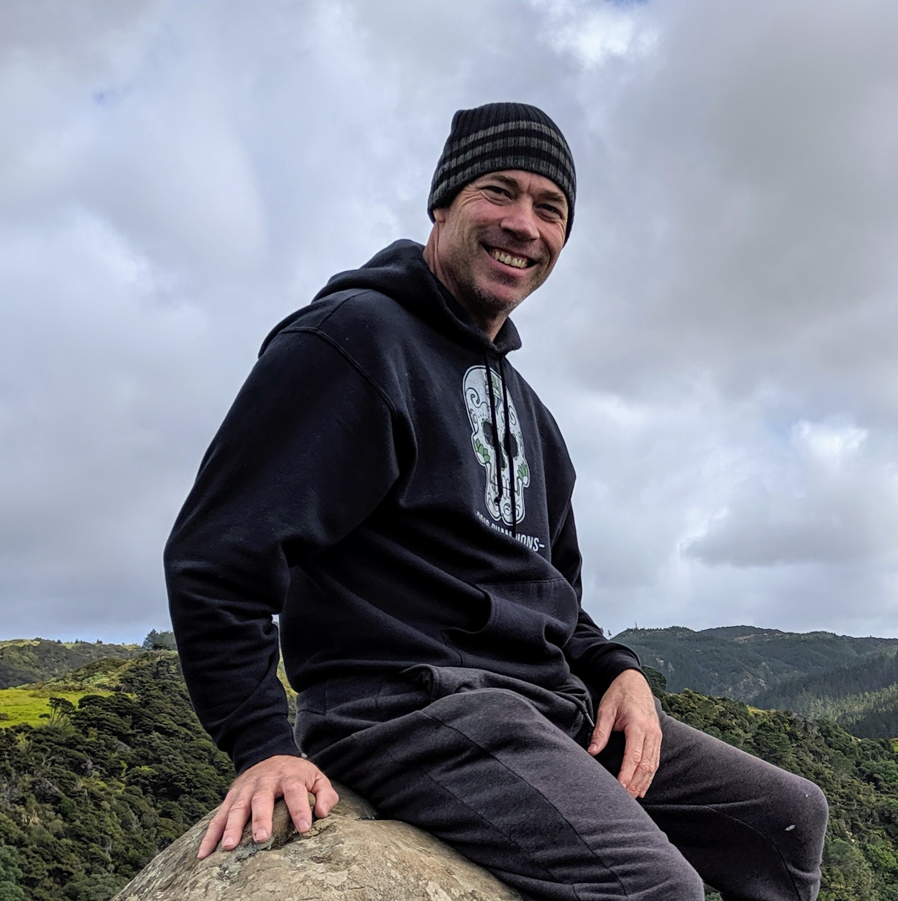
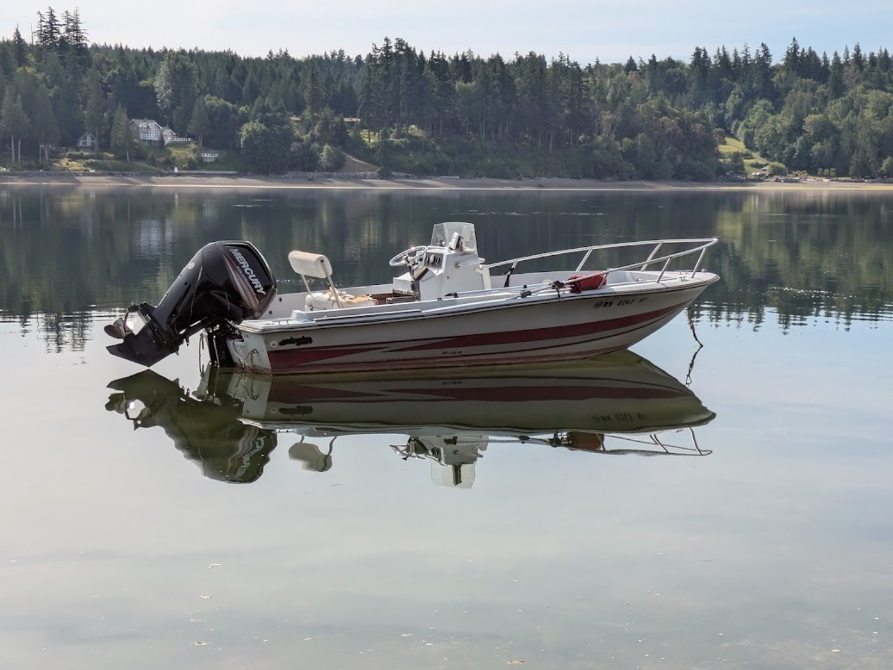

About Cap'n Pete
Local, casual, safety-minded boat outings from Herron Island.

Hi, I'm Pete.
I have spent years exploring the waters of Case Inlet and the South Sound, and I love sharing this special place with friends and visitors alike.
Cap'n Pete Boat Excursions is built around simple, personal trips: a sunset ride, a boat outing for dinner, a beach day, or a hike that starts with time on the water.
- USCG certified captain for small craft
- Red Cross CPR/First Aid certified
- 17-foot boat with 115 HP engine
- Life jackets and safety equipment provided
See you on the water!
About the boat

A nimble 17-foot boat with a 115 HP engine, ideal for small private outings around Case Inlet and nearby South Sound destinations.
The vibe
This is not a big commercial tour. It is a small, local, informal experience for people who want to enjoy the water with someone who knows and loves the area.
Trips are private, flexible, and weather-aware. We keep it simple, safe, and fun.